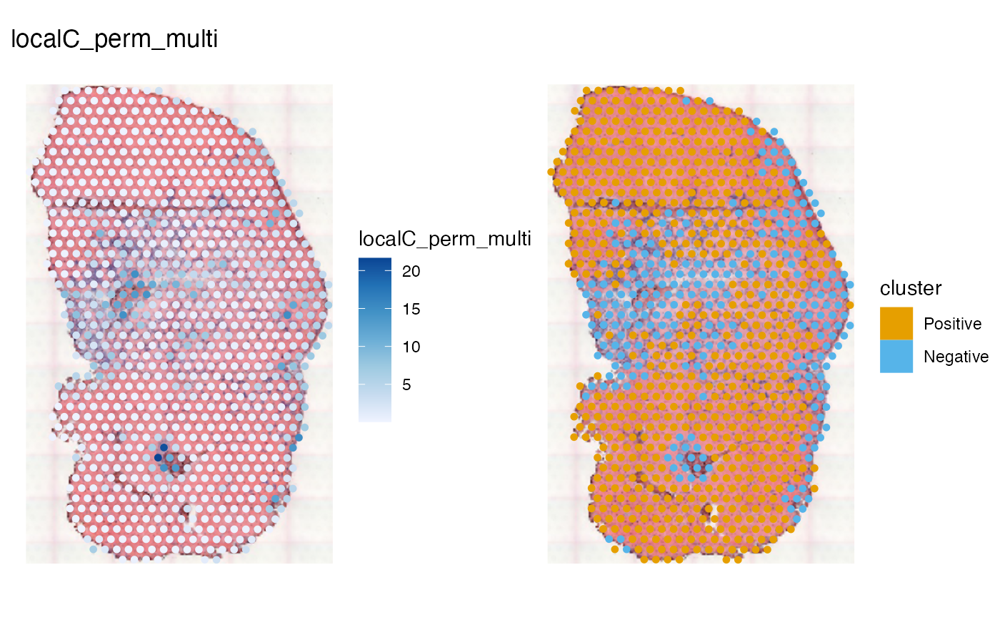
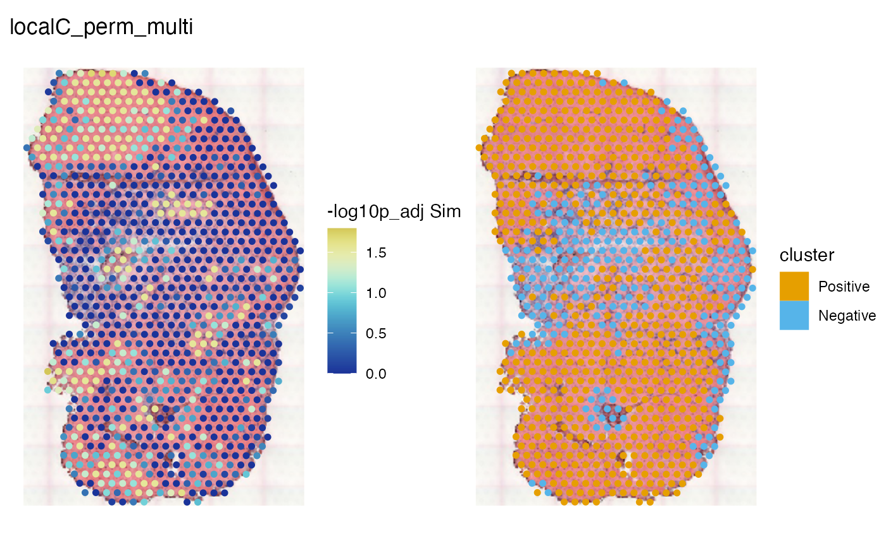
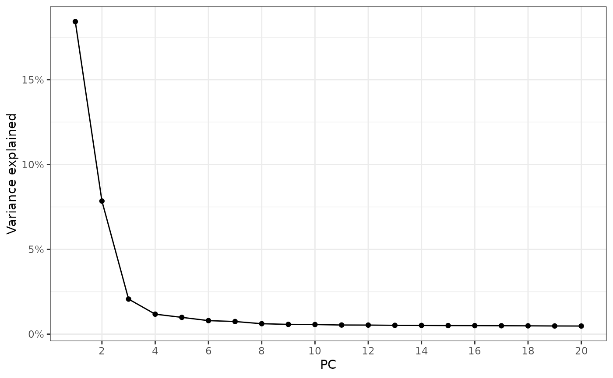
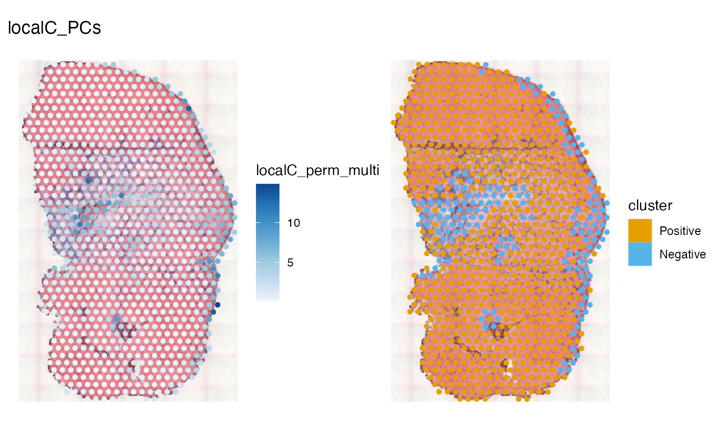
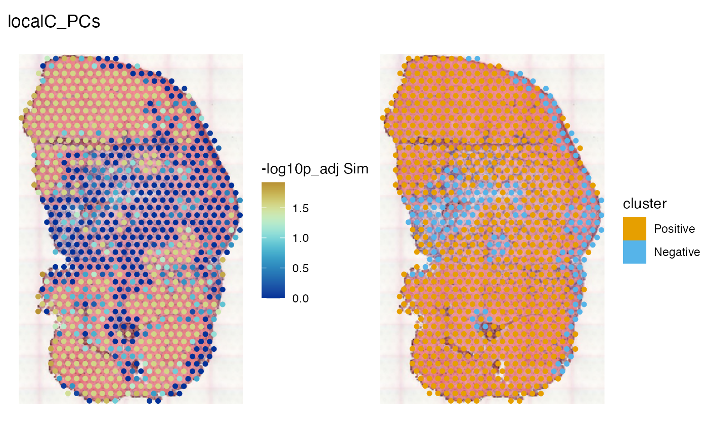

Introduction
Local Geary’s C (Anselin 1995) is defined as:
where s are spatial weights from location to location and is a variable at spatial location. This is generalized to multiple variables in (Anselin 2019):
where there are variables. This is essentially a spatially weighted sum of squared distances between locations in feature space. This vignette demonstrates usage of multivariate local Geary’s C.
Here we load the packages used:
library(Voyager)
library(SFEData)
library(SpatialFeatureExperiment)
library(scater)
library(scran)
library(ggplot2)
library(spdep)
theme_set(theme_bw())QC was performed in another vignette, so this vignette will not plot QC metrics.
(sfe <- McKellarMuscleData("full"))
#> see ?SFEData and browseVignettes('SFEData') for documentation
#> loading from cache
#> class: SpatialFeatureExperiment
#> dim: 15123 4992
#> metadata(0):
#> assays(1): counts
#> rownames(15123): ENSMUSG00000025902 ENSMUSG00000096126 ...
#> ENSMUSG00000064368 ENSMUSG00000064370
#> rowData names(6): Ensembl symbol ... vars cv2
#> colnames(4992): AAACAACGAATAGTTC AAACAAGTATCTCCCA ... TTGTTTGTATTACACG
#> TTGTTTGTGTAAATTC
#> colData names(12): barcode col ... prop_mito in_tissue
#> reducedDimNames(0):
#> mainExpName: NULL
#> altExpNames(0):
#> spatialCoords names(2) : imageX imageY
#> imgData names(1): sample_id
#>
#> unit: full_res_image_pixels
#> Geometries:
#> colGeometries: spotPoly (POLYGON)
#> annotGeometries: tissueBoundary (POLYGON), myofiber_full (POLYGON), myofiber_simplified (POLYGON), nuclei (POLYGON), nuclei_centroid (POINT)
#>
#> Graphs:
#> Vis5A:The image can be added to the SFE object and plotted behind the geometries, and needs to be flipped to align to the spots because the origin is at the top left for the image but bottom left for geometries.
if (!file.exists("tissue_lowres_5a.jpeg")) {
download.file("https://raw.githubusercontent.com/pachterlab/voyager/main/vignettes/tissue_lowres_5a.jpeg",
destfile = "tissue_lowres_5a.jpeg")
}
sfe <- addImg(sfe, imageSource = "tissue_lowres_5a.jpeg", sample_id = "Vis5A",
image_id = "lowres",
scale_fct = 1024/22208)
sfe_tissue <- sfe[,colData(sfe)$in_tissue]
sfe_tissue <- sfe_tissue[rowSums(counts(sfe_tissue)) > 0,]
sfe_tissue <- logNormCounts(sfe_tissue)
colGraph(sfe_tissue, "visium") <- findVisiumGraph(sfe_tissue)Gene expression
Here we compute multivariate local C for top highly variagle genes (HVGs) in this dataset:
hvgs <- getTopHVGs(sfe_tissue, fdr.threshold = 0.01)
sfe_tissue <- runMultivariate(sfe_tissue, "localC_perm_multi", subset_row = hvgs)The results are stored in reducedDim although it’s not
really a dimension reduction. It can also go into colData
if dest = "colData". The test is two sided, but the
alternative argument can be set to “greater” to only test
for positive spatial autocorrelation and “less” for negative spatial
autocorrelation.
names(reducedDim(sfe_tissue, "localC_perm_multi"))
#> [1] "localC_perm_multi" "E.Ci" "Var.Ci"
#> [4] "Z.Ci" "Pr(z != E(Ci))" "Pr(z != E(Ci)) Sim"
#> [7] "Pr(folded) Sim" "Skewness" "Kurtosis"
#> [10] "-log10p Sim" "-log10p_adj Sim" "cluster"
spatialReducedDim(sfe_tissue, "localC_perm_multi", c(1, 12),
image_id = "lowres", maxcell = 5e4)
In Geary’s C, a value below 1 indicates positive spatial autocorrelation and a value above 1 indicates negative spatial autocorrelation. Local Geary’s C is not scaled, but from the square difference expression, a low value means a more homogeneous neighborhood and a high value means a more heterogeneous neighborhood. Here considering all 341 top HVGs, the muscle tendon junction and the unjury site are more heterogeneous, which is detected as negative cluster.
Permutation testing was performed, although Anselin noted that the pseudo-p-values should only be taken as indicative of interesting regions and should not be interpreted in a strict sense.
spatialReducedDim(sfe_tissue, "localC_perm_multi", c(11, 12),
image_id = "lowres", maxcell = 5e4,
divergent = TRUE, diverge_center = -log10(0.05))
Warm colors indicate adjusted p < 0.05. This should be interpreted along with the clusters. In this dataset, there are interestingly homogeneous regions in the myofibers, and an interestingly heterogeneous region in the injury site. Most of the significant regions are positive cluster, but the center of the injury site is significant and is negative cluster.
Top principal components
Because multivariate local Geary’s C is a spatially weighted sum of squared distances between locations in feature space, it’s affected by the curse of dimensionality when used on a large number of features, when uniformly distributed data points in higher dimensions become more equidistant to each other with increasing number of dimensions. However, real data is not uniformly distributed and can have a much smaller effective dimension than the number of features, as many genes are co-regulated. Anselin suggested using the main principal components, but the issue of curse of dimensionality remains to be further investigated. Furthermore, as the cosine and Manhattan distances have been suggested to mitigate curse of dimensionality, I wonder what if I use these instead of the Euclidean distance in feature space for multivariate local Geary’s C.
So here we perform multivariate local Geary’s C on the top PCs:
sfe_tissue <- runPCA(sfe_tissue, ncomponents = 20, scale = TRUE)
ElbowPlot(sfe_tissue)
What percentage of variance is explained by the top 20 PCs?
sum(attr(reducedDim(sfe_tissue, "PCA"), "percentVar"))
#> [1] 38.8627
out <- localC_perm(reducedDim(sfe_tissue, "PCA"),
listw = colGraph(sfe_tissue, "visium"))
out <- Voyager:::.localCpermmulti2df(out,
nb = colGraph(sfe_tissue, "visium")$neighbours,
p.adjust.method = "BH")
reducedDim(sfe_tissue, "localC_PCs", withDimnames = FALSE) <- out
spatialReducedDim(sfe_tissue, "localC_PCs", c(1, 12),
image_id = "lowres", maxcell = 5e4)
spatialReducedDim(sfe_tissue, "localC_PCs", c(11, 12),
image_id = "lowres", maxcell = 5e4,
divergent = TRUE, diverge_center = -log10(0.05))
The area that seem significant from the permutation test is larger than that from the HVGs, and the area considered negative clusters is smaller. The significant regions are pretty much all positive cluster. Do the differences in results have anything to do with curse of dimensionality? Twenty dimensions can still exhibit curse of dimensionality, but over 300 HVGs here would be worse. Or is it that we lose a lot of information, including negative spatial autocorrelation, by only using 20 PCs?
Session info
sessionInfo()
#> R version 4.4.2 (2024-10-31)
#> Platform: x86_64-pc-linux-gnu
#> Running under: Ubuntu 22.04.5 LTS
#>
#> Matrix products: default
#> BLAS: /usr/lib/x86_64-linux-gnu/openblas-pthread/libblas.so.3
#> LAPACK: /usr/lib/x86_64-linux-gnu/openblas-pthread/libopenblasp-r0.3.20.so; LAPACK version 3.10.0
#>
#> locale:
#> [1] LC_CTYPE=C.UTF-8 LC_NUMERIC=C LC_TIME=C.UTF-8
#> [4] LC_COLLATE=C.UTF-8 LC_MONETARY=C.UTF-8 LC_MESSAGES=C.UTF-8
#> [7] LC_PAPER=C.UTF-8 LC_NAME=C LC_ADDRESS=C
#> [10] LC_TELEPHONE=C LC_MEASUREMENT=C.UTF-8 LC_IDENTIFICATION=C
#>
#> time zone: UTC
#> tzcode source: system (glibc)
#>
#> attached base packages:
#> [1] stats4 stats graphics grDevices utils datasets methods
#> [8] base
#>
#> other attached packages:
#> [1] spdep_1.3-6 sf_1.0-19
#> [3] spData_2.3.3 scran_1.34.0
#> [5] scater_1.34.0 ggplot2_3.5.1
#> [7] scuttle_1.16.0 SingleCellExperiment_1.28.1
#> [9] SummarizedExperiment_1.36.0 Biobase_2.66.0
#> [11] GenomicRanges_1.58.0 GenomeInfoDb_1.42.0
#> [13] IRanges_2.40.0 S4Vectors_0.44.0
#> [15] BiocGenerics_0.52.0 MatrixGenerics_1.18.0
#> [17] matrixStats_1.4.1 SFEData_1.8.0
#> [19] Voyager_1.8.1 SpatialFeatureExperiment_1.9.4
#>
#> loaded via a namespace (and not attached):
#> [1] splines_4.4.2 bitops_1.0-9
#> [3] filelock_1.0.3 tibble_3.2.1
#> [5] R.oo_1.27.0 lifecycle_1.0.4
#> [7] edgeR_4.4.0 lattice_0.22-6
#> [9] MASS_7.3-61 magrittr_2.0.3
#> [11] limma_3.62.1 sass_0.4.9
#> [13] rmarkdown_2.29 jquerylib_0.1.4
#> [15] yaml_2.3.10 metapod_1.14.0
#> [17] sp_2.1-4 RColorBrewer_1.1-3
#> [19] DBI_1.2.3 multcomp_1.4-26
#> [21] abind_1.4-8 spatialreg_1.3-5
#> [23] zlibbioc_1.52.0 purrr_1.0.2
#> [25] R.utils_2.12.3 RCurl_1.98-1.16
#> [27] TH.data_1.1-2 rappdirs_0.3.3
#> [29] sandwich_3.1-1 GenomeInfoDbData_1.2.13
#> [31] ggrepel_0.9.6 irlba_2.3.5.1
#> [33] terra_1.7-83 units_0.8-5
#> [35] RSpectra_0.16-2 dqrng_0.4.1
#> [37] pkgdown_2.1.1 DelayedMatrixStats_1.28.0
#> [39] codetools_0.2-20 DropletUtils_1.26.0
#> [41] DelayedArray_0.32.0 tidyselect_1.2.1
#> [43] UCSC.utils_1.2.0 memuse_4.2-3
#> [45] farver_2.1.2 viridis_0.6.5
#> [47] ScaledMatrix_1.14.0 BiocFileCache_2.14.0
#> [49] jsonlite_1.8.9 BiocNeighbors_2.0.0
#> [51] e1071_1.7-16 survival_3.7-0
#> [53] systemfonts_1.1.0 dbscan_1.2-0
#> [55] tools_4.4.2 ggnewscale_0.5.0
#> [57] ragg_1.3.3 Rcpp_1.0.13-1
#> [59] glue_1.8.0 gridExtra_2.3
#> [61] SparseArray_1.6.0 xfun_0.49
#> [63] EBImage_4.48.0 dplyr_1.1.4
#> [65] HDF5Array_1.34.0 withr_3.0.2
#> [67] BiocManager_1.30.25 fastmap_1.2.0
#> [69] boot_1.3-31 rhdf5filters_1.18.0
#> [71] bluster_1.16.0 fansi_1.0.6
#> [73] digest_0.6.37 rsvd_1.0.5
#> [75] mime_0.12 R6_2.5.1
#> [77] textshaping_0.4.0 colorspace_2.1-1
#> [79] wk_0.9.4 LearnBayes_2.15.1
#> [81] jpeg_0.1-10 RSQLite_2.3.8
#> [83] R.methodsS3_1.8.2 utf8_1.2.4
#> [85] generics_0.1.3 data.table_1.16.2
#> [87] class_7.3-22 httr_1.4.7
#> [89] htmlwidgets_1.6.4 S4Arrays_1.6.0
#> [91] pkgconfig_2.0.3 scico_1.5.0
#> [93] gtable_0.3.6 blob_1.2.4
#> [95] XVector_0.46.0 htmltools_0.5.8.1
#> [97] fftwtools_0.9-11 scales_1.3.0
#> [99] png_0.1-8 SpatialExperiment_1.16.0
#> [101] knitr_1.49 rjson_0.2.23
#> [103] coda_0.19-4.1 nlme_3.1-166
#> [105] curl_6.0.1 proxy_0.4-27
#> [107] cachem_1.1.0 zoo_1.8-12
#> [109] rhdf5_2.50.0 BiocVersion_3.20.0
#> [111] KernSmooth_2.23-24 vipor_0.4.7
#> [113] parallel_4.4.2 AnnotationDbi_1.68.0
#> [115] desc_1.4.3 s2_1.1.7
#> [117] pillar_1.9.0 grid_4.4.2
#> [119] vctrs_0.6.5 BiocSingular_1.22.0
#> [121] dbplyr_2.5.0 beachmat_2.22.0
#> [123] sfheaders_0.4.4 cluster_2.1.6
#> [125] beeswarm_0.4.0 evaluate_1.0.1
#> [127] zeallot_0.1.0 magick_2.8.5
#> [129] mvtnorm_1.3-2 cli_3.6.3
#> [131] locfit_1.5-9.10 compiler_4.4.2
#> [133] rlang_1.1.4 crayon_1.5.3
#> [135] labeling_0.4.3 classInt_0.4-10
#> [137] ggbeeswarm_0.7.2 fs_1.6.5
#> [139] viridisLite_0.4.2 deldir_2.0-4
#> [141] BiocParallel_1.40.0 munsell_0.5.1
#> [143] Biostrings_2.74.0 tiff_0.1-12
#> [145] Matrix_1.7-1 ExperimentHub_2.14.0
#> [147] patchwork_1.3.0 sparseMatrixStats_1.18.0
#> [149] bit64_4.5.2 Rhdf5lib_1.28.0
#> [151] KEGGREST_1.46.0 statmod_1.5.0
#> [153] AnnotationHub_3.14.0 igraph_2.1.1
#> [155] memoise_2.0.1 bslib_0.8.0
#> [157] bit_4.5.0